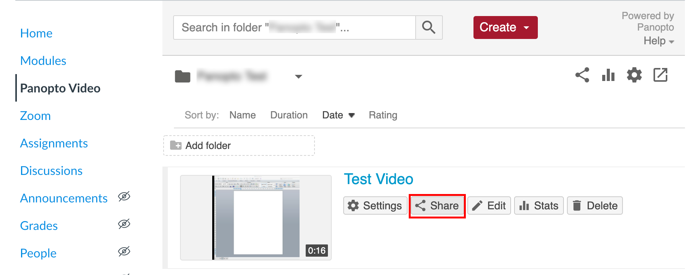
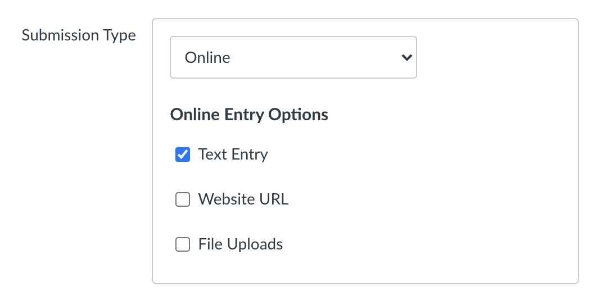

Panopto in SFU Canvas Support
For SFU Beedie Panopto specific questions, please contact your Panopto Admin team:
diliara_nasirova@sfu.ca for ExecED & undergrad
instructors.
crstech@sfu.ca for Grad Program instructors.
The following document includes step by step instructions on working with Panopto
Videos in SFU Canvas:
- How to list to Panopto Video in SFU Canvas Modules
- How to embed Panopto Video in SFU Canvas Pages
- How to create Panopto Video assignment with Canvas Assignment
- How to create Panopto Video assignment with Canvas Discussion
- How students submit video assignments with Panopto Video to Canvas Assignment
- How students submit video assignments with Panopto Video to Canvas Discussion
1. How to list Panopto Video in SFU Canvas Modules
You can list Panopto Video in Canvas Modules in two steps:
1.1.1 Go to your class Canvas site and then click on Panopto Video in the course menu.

1.1.2 Choose an existing video recording; click on Share
1.1.3 A pop-up window will appear; Click on the Copy Link button. Close the pop-up window.

1.2.1 Navigate to the Modules and click on the plus icon.

1.2.2 A drop-down menu will appear; Choose External URL from the drop down menu.

1.2.3 Paste the web address to the URL field; Add a title to the Page Name field; Check the Load in a new tab; Click on Add Item

1.2.4 Publish the page and module to make the video available for students.

This is how the published page with an external link to Panopto Video will look like in Canvas.

When students click on the page, it will open the Panopto Video in a new tab.

Optional: Videos will be visible to students in Panopto Video as soon as
they are created. You can also set up custom availability time or hide videos
when created by default:
2021.02.01 33:01s training recording
2. How to embed Panopto Video in SFU Canvas Pages
You can embed Panopto Video in a Canvas page in two steps:
2.1.1 Go to your class Canvas site and then click on Panopto Video in the course menu.
2.1.2 Choose an existing video recording; click on Share
2.1.3 A pop-up window will appear; click on Embed
2.1.4 Copy Embed Code with the default settings and close the pop-up window.
2.2.1 Navigate to a Canvas page you’d like to embed your video in. Click on the page to open it.
2.2.2 Click on Edit
2.2.3 From the top toolbar, click on Insert -> Embed
2.2.4 A pop-up window will open; Paste the embed code and click Submit
2.2.5 The video will be embedded in the page. Click Save to save the changes to the page.
2.2.6 Publish the page to allow the students to watch the video.
Optional: Video Embed Options
Review Video Embed Options for any customizations and then Copy Embed Code
Aspect Ratio: Choose from 16:9 (default), 4:3, or Custom. The aspect ratio describes the proportional relationship between the video"s height and width.
Width and Height: Adjust the size of the embedded video player in pixels. If you select an aspect ration of 16:9 or 4:3, the height will adjust automatically based on the width. If you select a custom aspect ratio, you may adjust the width and height independently.
Start At (in seconds): Controls the time in the video where playback will start.
Interactivity: Choose from All, Search and Rating Only, or None. All will allow a viewer to search within the video, rate the video, access the table of contents, make notes, and add discussion posts. Search and Rating Only will allow a viewer to only search through the video and rate it but not access the other interactive features. None removes all of the interactive features.
Autoplay: Select this option to have the video begin playing automatically when the webpage loads.
Enable "Watch in Panopto": Select this option to display an arrow that allows a viewer to open the video in the full interactive player.
Show Title: Select this option to display the title of the video at the top of the player.
Show Logo: Select this option to display your organization's embedded logo in the player.
3. How to create Panopto Video assignment with Canvas Assignment
You can create Panopto Video assignment with Canvas Assignment in your course in two steps:
3.1.1 Go to your class Canvas site and then click on Panopto Video in the course menu.
3.1.2 Click on the Gear icon on the top right to navigate to Folder Settings
3.1.3 A pop-up window will appear; Click on Create Assignment Folder link
3.1.4 An assignment folder will be created using the same name as the course with [assignments] appended to the name. Students and other creators assigned to your course will now be able to create videos with Panopto and/or submit recordings to this folder. Close the pop-up window.
3.1.5 The assignment folder will be listed in the content area. Optional: to learn more about folder management, check support.panopto.com
3.2.1 Navigate to Canvas Assignments.
3.2.2 Create an assignment by clicking on the Plus sign.
3.2.3 A pop-up window will appear. Fill in the details for the assignment setup and click Save. A Canvas Assignment will be created.
3.2.4 Click on the new assignment that was created.
3.2.5 Click on the Edit button.

3.2.6 Add relevant instructions to your students. Here is an example: “Please submit a link to your Panopto video here”.
3.2.7 In order to allow web link submissions, select Submission Type to Online, Text Entry and/or Website URL.
3.2.8 Click Save and Publish the assignment. All set.